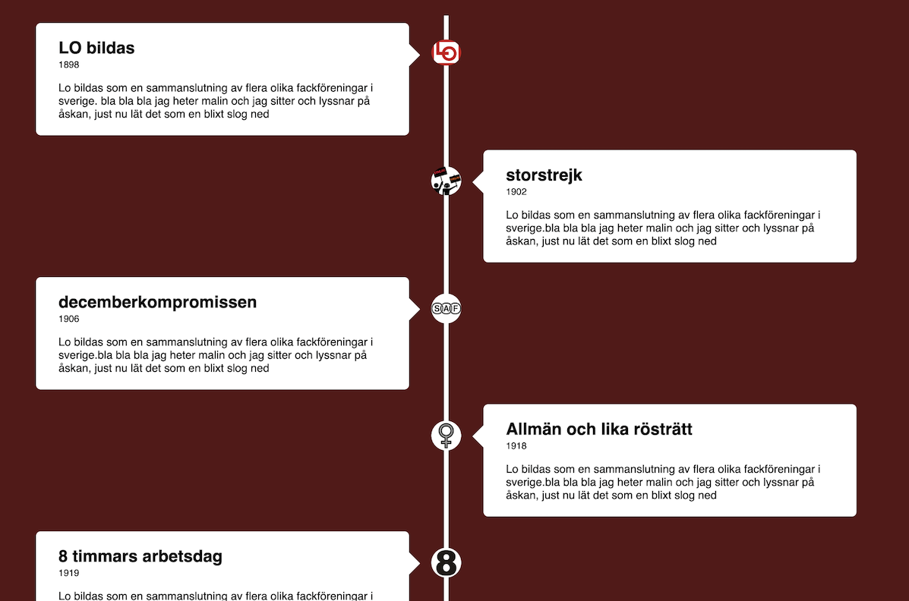
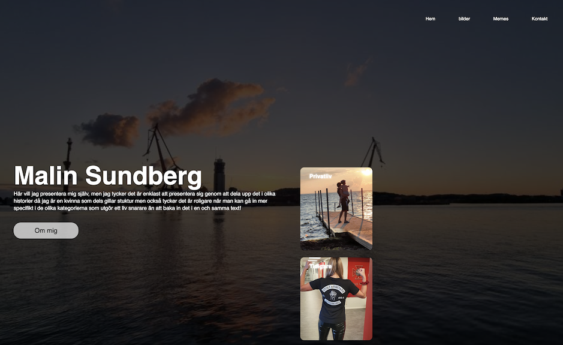

A timeline that shows important dates in the union history. I did this to practice different ways of making effekts and animations, it was a fun execise and it was the first time i accually understood the unlimited possibilitys with CSS

here's a basic page i did when i first tried bootstrap, it's a presentation of myself and were used as contribution on a test i had in a course in HTML and CSS fokusing on styling with Bootstrap.

This project is the first "real" one i did, before i startet this educaton i had no idea how to do HTML or CSS. The school i applied to offered a course before applying and this project i did as a first test to get accepted to the school.